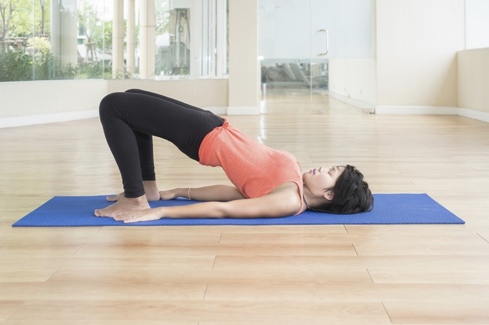
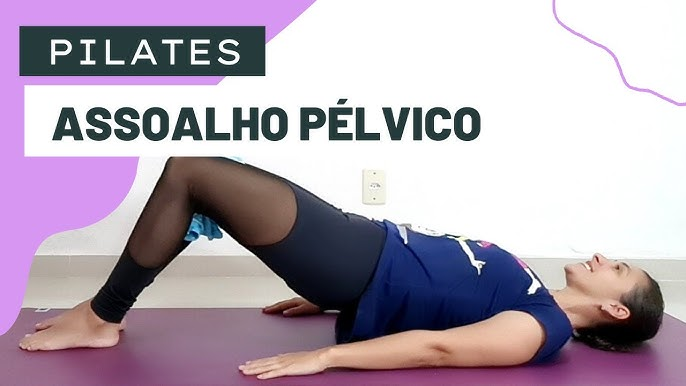

O Pilates é amplamente conhecido por seus benefícios na postura, flexibilidade e fortalecimento do *core*. No entanto, o **Pilates Clínico**, quando aplicado por um fisioterapeuta, torna-se uma ferramenta poderosa e segura para a saúde do assoalho pélvico.

Pilates clínico: fortalecimento integrado do assoalho pélvico
Diferente do Pilates tradicional, o Pilates Clínico é adaptado para atender a necessidades específicas de reabilitação, sendo fundamental para quem busca prevenir ou tratar disfunções pélvicas.
O assoalho pélvico é parte integrante do *core* (centro de força) do corpo. Os princípios do Pilates, como a respiração e a ativação do centro, naturalmente envolvem a conscientização e o fortalecimento desses músculos.
Exercícios de Pilates adaptados para a saúde pélvica
Em um programa de fisioterapia pélvica, o Pilates Clínico é frequentemente incorporado após a fase inicial de reabilitação. Ele serve como uma ponte para o retorno a atividades físicas mais intensas, garantindo que o assoalho pélvico esteja protegido e funcional.
Pilates clínico como ferramenta de reabilitação pélvica
É crucial que o Pilates seja orientado por um profissional com conhecimento em saúde pélvica para garantir que os exercícios sejam realizados sem sobrecarga ou risco de lesão.

Transformação da saúde pélvica através do Pilates clínico
**O Pilates Clínico é mais do que exercício; é reedução corporal. Descubra como ele pode transformar sua saúde pélvica e sua qualidade de vida.**
>